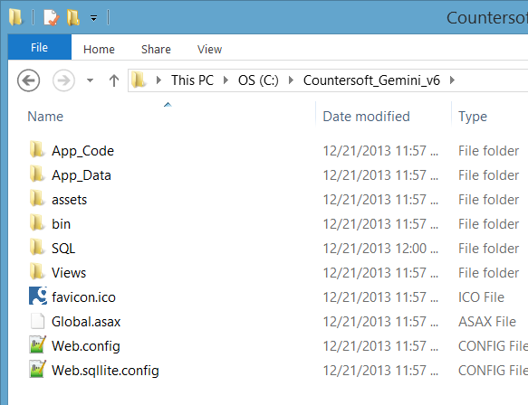
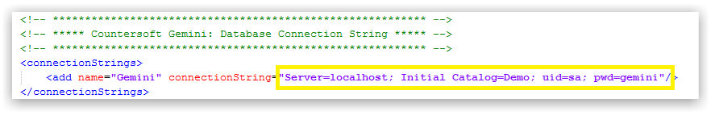

Note You should not need to manually execute upgrade SQL scripts - install the new release, browse to the site, and Gemini will auto upgrade for you. You can check the table gemini_install, which has a single row that contains the version the database has been upgraded to. If it does not state the right version, please use SSMS to manually execute all SQL scripts in the SQL folder from your last version, up to and including the current.
The zip file download contains both the Gemini web application and the sample database if you need data to get you going.
The following must be present on your Windows Server. You can choose to have your IIS Web Server and SQL Server on the same machine or run each on different machines, but you must be able to connect with SQL from your Web Server to your SQL Server.
If you cannot confirm, or do not understand any of the above items, then contact us at: support@countersoft.com, or contact your IT administrator.
If you have not downloaded Gemini, please click here to download the latest release.
Note Right click on the file then select Properties and click Unblock.
Unzip Gemini and open the manual install folder.
Please check here if you have everything ready for the installation process.
Unzip the Gemini zip file and you should see the contents as follows:

You should create a unique Application Pool for your site. In IIS right-click, and add an application pool.

Name the application pool. Set the .NET Framework to v4.0 and Managed pipeline mode to Integrated.

Note If you are using the ticketing or scheduled reporting features of Gemini, make sure that Application Pool is set to be "Always On".
In IIS right-click and add Gemini as an Application:

You will need to give your Gemini application a name such as "Gemini". This will mean Gemini will be accessible via https://servername/Gemini.
Select the Gemini Application Pool:
After the Gemini web application has been created, you will see this:

We highly recommend that you apply a SSL Certificate to your site, especially if it is open to a public network. See your network administrator if you do not know how to do this. We further recomend that in IIS you check the box to "Require SSL" and implement an http redirect for a 403 error to seamlessly redirect a user trying to access the http site to the https site.
Create a SQL Server database that will be used by Gemini.
It is advisable to use SQL Server Standard or Enterprise editions. Gemini will run with SQL Express but it is not recommended and not supported, not even for development instances.
Where possible, use SQL or Mixed (SQL and Windows) Authentication and make a note of your SQL Server user credentials (required for next step). Ensure your SQL user has DBO permissions in the new database.
Right-click on the Gemini Web Application in IIS and select the Explore option:

Edit the web.config file and put in the correct SQL Server user credentials:

Save the web.config and Gemini should now be setup.
After installation you can navigate to the Gemini web application using your browser (e.g. http://myserver/gemini).
If you see something like the above, then Gemini has been installed correctly.
Login Credentials Username is "manager" and password is "manager"
For administrative control, Gemini requires write access to the following THREE FOLDERS that are located where you installed Gemini:

App_Code folder, select Security tab, allocate Modify/Full Control permissions to the EVERYONE groupApp_Data folder, select Security tab, allocate Modify/Full Control permissions to the EVERYONE groupAssets folder, select Security tab, allocate Modify/Full Control permissions to the EVERYONE groupThe following video will provide you with a brief, rapid overview of manually installing Gemini using the zip file.